KubeCon 2023 上海：参会“小”记
0. 前言
国庆前到上海参加了 2 天的 KubeCon + CloudNativeCon + Open Source Summit China 2023（以下简称 KubeCon），并解锁了新的角色（Speaker，喇叭）。至此，2022 年（没错，是 21 个月前定的）OKR 完成度达到了 50%。国庆长假之后良心发现，决定记录一下这次 Journey，但不限于短短的 2 天内的见闻。
1. Session 小记
KubeCon 两天（不包含 IstioCon）一共有约 150 场分享，在开始之前需要先安排好时间和路线，我是在飞机上匆忙完成的。受限于工作领域和专业知识，我参加的分享大部分是可观测性领域的，少部分是当前比较热门的 AIGC 相关内容，再补充一些 Kubernetes 的通用知识。
在记录别人的分享之前，先打个广告：我在本次大会上分享了 OpenTelemetry 的采样策略，感兴趣的同学可以查看：Video | Slides | Blog。
1.1 用 eBPF 充当网络加速器
在 Kubernetes 部署的大背景下，由于每个 Pod 都有自己的网络协议栈，因此数据包从一个 Pod 发送到另一个 Pod 时会多次经过完整的网络协议栈。这会带来一些耗时上的影响，而当 Service Mesh 存在时，数据包又要额外地经过 Sidecar，所以这种开销将会成倍地上涨。
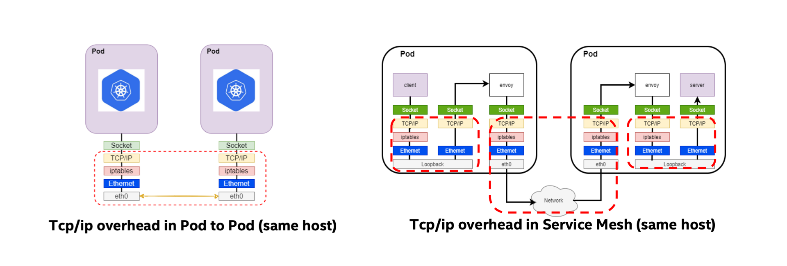
为了减少这种开销，我们可能会思考如何将同机的数据传输更快速地送往目的地。在开发中，有很多问题我们都可以通过加缓存来优化，这种手段暴力但很有效。如果有一种手段可以把 Socket 缓存，使得数据包能绕过一些网络协议栈直接抵达目的地，数据传输性能可能会得到提升。
借助 eBPF，可以通过 BPF_PROG_TYPE_SOCK_OPS 将所有建立连接的 Socket 捕获并置入 map 中；当有 TCP 事件产生时，可以通过 BPF_PROG_TYPE_SK_MSG 感知并实现 Socket 数据的重定向。
接下来要解决的问题就是，如何通过 Socket 的信息将多个 Socket 两两配对。先举个简单的例子，
如果我捕获了两个 Socket，这两个 Socket 的信息中 src_ip / src_port / dest_ip / dest_port 四元组正好是交叉匹配的，那很容易将其关联起来，未来的数据包就可以从 IP:PORT -> IP:PORT 的访问（会经过网络协议栈）转换为 Socket -> Socket 的访问。
而在 Service Mesh 中情况会稍微复杂一些，因为：应用服务发出的数据包 dest_ip / dest_port 虽然是目标应用的，但是它会被 Envoy 代理拦截。这样的数据包应该先被重定向到 Envoy 的 Socket，再从 Envoy 的 Socket 重定向到目标应用的 Socket。
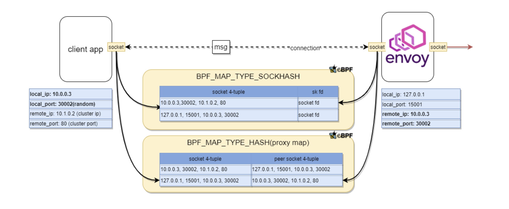
这样的加速器在 Kubernetes 集群规模不大时会有良好的效果，因为 Node 数量少才会出现大量的 Node 内通信。而若 Node 中存在大量外部流量，网络间的延迟会大大压缩 eBPF 加速带来的优势，使得整体优化效果趋于平庸。
从性能测试报告中可以看到，这种优化方案极大地降低了 TCP 延迟，但是在包大小小于 512 Bytes 时会降低整体的吞吐量（优化前后 Ratio < 1），潜在原因是：加速器在绕过网络协议栈的同时也绕过了相关的优化，如对小包的攒批发送。
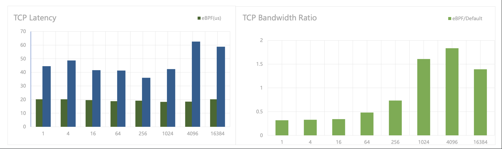
1.2 基于 Cluster Autoscaler 的 Kubernetes 自动扩容
这场分享是关于 Kubernetes 中的 Worker Node 弹性扩缩容工具 Cluster Autoscaler （后文简称 CA）的。在利用 Kubernetes 托管批量作业时，因为这些作业常常是定时的，他们的特点是：只在运行时需要大量的机器资源。为了降低成本，通常有两个方向对批量作业进行优化：
- 分散不同作业的运行时间，使得机器负载在一定周期内都保持均匀；
- 在作业运行时视资源需求量进行扩容，运行后进行缩容。
CA 是针对后者的解决方案之一，当 Cluster 中存在大量的 Pending Pod 时，CA 就会自动触发扩容，引入新的节点让 Pod 调度上去；同样，CA 也会在资源使用率下降时将 Pod 调度到其他节点上去，并触发缩容。
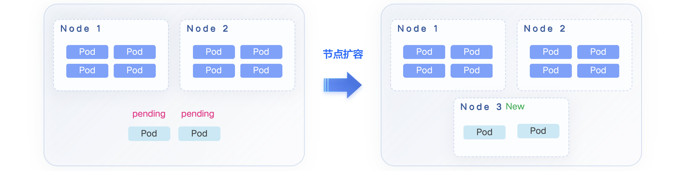 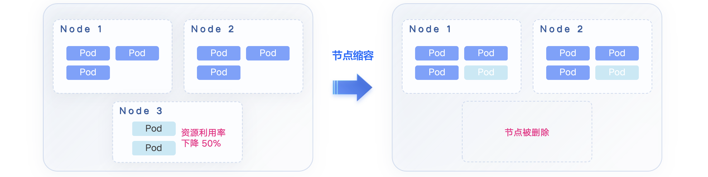
但是在扩缩容的过程中常常会有很多问题导致其失败。从流程上看，用户需要（由 CA 自动完成）：
- 启用新的节点；
- 安装 Kubernetes 和相关组件；
- 加入现有集群
- 承接 Pending Pod 的调度并真正发挥其价值。
在节点启用后、Pod 健康运行前，任何一个阶段出现问题都会导致节点运行的费用白白浪费掉，也是非常影响用户体验的事情。常见问题和解决方案在下文详细讨论。
在大规模的批量任务运行时，会在短期内出现大量的待调度 Pod，因此 CA 会根据算法和策略引入大量节点，这时集群中的中心化组件，不管是某些 Coordinator 服务还是像 etcd 这类的存储中间件，会承受往常数十倍的压力。在不增加资源投入（例如升级中心化组件配置）的前提下，这类问题通用的解决办法就是一招鲜：限速限量、分批。中心化组件的可承受压力通常都是可以预估的，这些数据可以反馈给 CA 控制节点启动数量、加入现有集群的队列长度等等。
第二个问题是当大量节点加入后，新 Pod 的启动不可避免地需要拉取超大体积的镜像，同样会引入网络、磁盘写入上的瓶颈。万金油的方案自然是：缓存、预热。基于批量作业运行的背景，可以推测大量 Pod 会使用相同的镜像，因此这些镜像可以先构建到操作系统镜像，在节点启动完成时镜像就已经准备好了，可以直接使用。从分享者展示的数据中可以了解到，这帮助他们将扩容时间从 22 分钟缩短至 4 分钟，写入流量峰值从 14 GiB/s 下降至 6 GiB/s，效果非常显著。
第三个问题是社区中已经解决的，但是也算是大规模扩容中的一点经验。在 Pending Pod 数量、节点池和预估节点数量都非常多时，想要计算他们之间的调度条件、关系就会变得更困难、耗时更长。这个问题可以推广多个相互关联的组件同时进行扩容或快速增长的场景，我们想要努力避免笛卡尔积型的计算，方法依然是前面的一招鲜：限速限量、分批。这个思路在数据库 JOIN 查询时也有体现：Nested loop join。
从上面的讨论可以看出，这些问题的解法相信许多开发者也在日常开发中有用到过，区别只是在它们被用在广告、物流、金融业务，还是这些基础设施的编排、调度上。计算机领域想通的东西很多，而且许多问题都不需要非常高深、复杂的解决方案就能得到不错的优化效果。
1.3 Chat and Get the PromQL
这是一场介绍 LLM 调试经验的分享，比较适合我这种完全没有了解过 AIGC 和 LLM 的小白。我不确定介绍的经验是较为入门、已经广泛使用的，还是仍在起步调研阶段，但是新人应该很容易通过这场分享的几个例子理解 LLM 与 Prompt 工程 （的冰山一角）。
2023 年有一件事很多公司都在做：提供基于 AIGC 的机器人。对于开发者来说 PromQL 可能并不陌生，但如果不是每天和 Prometheus 或者监控系统打交道，要毫无障碍、不查阅资料写出一条 PromQL 还是有点难度的，包括且不限于：语法关键词忘了、Metric 名字忘了、怎样组合出复杂运算忘了…借助 LLM，大家想达成的效果可能是：
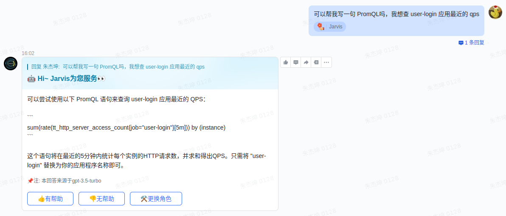
那么首先得教会机器人如何回答。如果直接把简单的 PromQL 的文档、Stack Overflow 回答、企业内 Q&A 文档当作提示词（Prompt）丢给它，训练出来的机器人只能获得极低的回答准确率。因此，这里引出了 Chain-of-Thought Prompt 的调优思路，也就是不直接告诉机器人结果，而是给它一步一步解释结果是怎么来的。举个例子：
| Standard Prompting | Chain-of-Thought Prompting | |
|---|---|---|
| Q: 我有 5 个网球，我又买了 2 筒网球，每筒有 3 个网球。现在我有多少个网球？ | （同左） | |
| A: 11 个。（Prompt） | A: 我原本有 5 个网球，2 筒网球每筒有 3 个，一共是 6 个。5 + 6 = 11，答案是 11 个。（Prompt） | |
| Q: 餐厅有 23 个苹果，如果他们用 20 个去做午餐，然后再买 6 个，餐厅一共有个苹果？ | （同左） | |
| A: 27 个。（错误） | A: 餐厅原本有 23 个苹果，他们用了 20 个去做午餐，所以还剩 23 - 20 = 3 个。他们又买了 6 个苹果，所以他们还剩 3 + 6 = 9，答案是 9 个。（正确） |
所以，针对 PromQL，可能会见到这样的 Prompt：
- Q: 写一个 PromQL 展示过去 5 分钟平均响应时间最长的 Top 10 应用。
- A:
- 首先，我们需要计算每个应用过去 5 分钟的总响应时间：
sum by (service)(sum_over_time(arms_http_requests_seconds{}[5m]))；
- 然后，计算每个应用的调用次数：
sum by (service)(sum_over_time(arms_http_requests_count{}[5m]))；
- 接着，计算每个服务的平均响应时间：
sum by (service)(...) / sum by (service)(...)；
- 最后，用
topk函数找到响应时间 Top 10 的应用：topk(10, sum by (service)(...) / sum by (service)(...))
- 首先，我们需要计算每个应用过去 5 分钟的总响应时间：
在特定测试数据集下，可以看到准确率的提升还是很明显的。
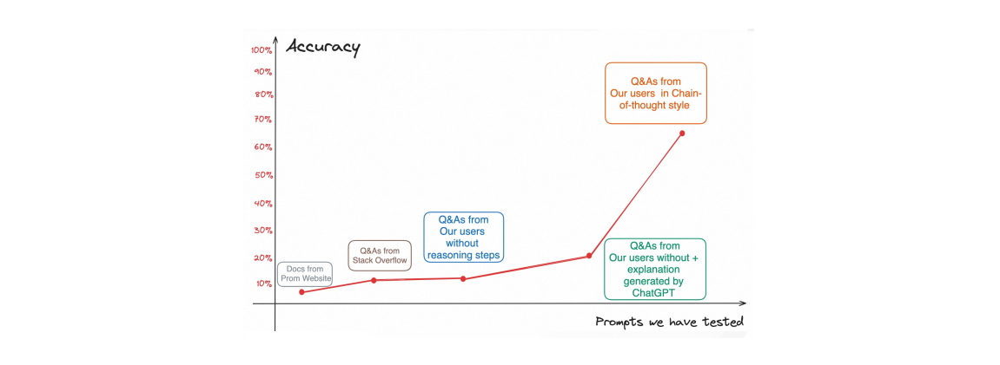
1.4 Forget Kubectl and Talk to Your Clusters
这是一场很有意思的 LLM 应用分享，除了前面提到的 PromQL，你一定想知道 LLM 还可以帮你做什么，来自蚂蚁金服的答案是：管理 Kubernetes 集群。
我们直接从分享的中间部分开始回顾，或许很多企业都有设计过 IM 机器人帮助执行 kubectl 或者其他命令，因为从接收到告警消息，打开你的 Terminal 或者浏览器，经过无数步骤，到最终登入服务器执行命令行——太麻烦了，远不如在 IM 工具上发消息方便。
做这个机器人其实很简单，它甚至可以是一个只提供 Input 接口的 Server，在 LLM 火爆之前就已经是没有门槛的事情。但当你把这个机器人做出来，会发现：用的人不多——命令和参数太难记了！老鸟早就把一套命令行玩得行云流水不屑于用，小白用这机器人还要翻半天文档，效率还是很低。
所以，大家又会想做一个训练好的机器人，接收自然语言输入，转为机器语言去执行。
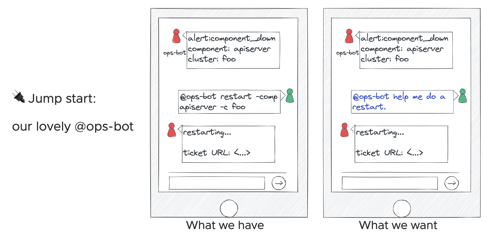
有了这么个原型，开始尝试训练模型来输出一些 Shell Script 和 kubectl xxx，又会发现：有点危险——这俩写起来随心所欲的东西，靠谱吗？安全吗？怎样验证他们靠谱安全？
我们知道自然语言一直无法直接被机器使用，是因为它也很随心所欲——不结构化。Shell Script 和 kubectl 存在的问题很类似，那么能不能改为输出一些更加结构化的东西呢？
受 DB-GPT 影响可以联想到，有一种更成熟和容易审计的语言：SQL。如果在 LLM 和 Cluster 之间实现一层 Cache，这层 Cache 可以使用 SQL 作为查询语言，LLM 就可以输出结构化的 SQL 直接使用，Cache 起到保护 Cluster 操作的作用。
这种设计其实还有很多细节没有在分享上讨论，包括：对需要 kubectl 操作资源的情况，例如重启，是怎么处理的？Cache Layer 如果没有命中结果，是否要再去找 Kubernetes 要信息，后面这个步骤怎么保证安全、没有注入风险？不过对于 LLM 的结构化输出的想法还是有借鉴的价值的，因为想把它用在实际运维工作中，确实需要对安全性、可靠性、可审计性有严格的把控能力。
另一个有趣的用途是关于 Kubernets 资源的 Label Extraction。我们知道有很多东西是由 Label 和对应规则代表的，例如，我们为了确认某个 Pod 会不会在接下来的热更新中存活，需要去查看它的 YAML，看一下里面是否有特定的 Label：
...
metadata:
name: nginx
labels:
app: nginx
custom-key-foo: bar
another-custom-key/xyz: true # Here
所以如果你训练出一个能帮你找特定 Label 的 LLM 机器人，你可能会有以下问答：
- Q：App
nginx的another-custom-key/xyz是true吗？ - A：是的。
这应该很简单，因为这只是一个 Key-Value 查找的任务。不过更好的做法是用这些 Label 的含义作为 Prompt 去训练它，这里可能就涉及到前面的 Chain-of-Thought Prompt。个人觉得这个应用也比较有价值，更好的问答形式应该是：
- Q：App
nginx会不会在接下来的热更新中存活？ - A：会的。
最后，把所有东西放在一起，就有了如下的结构图：
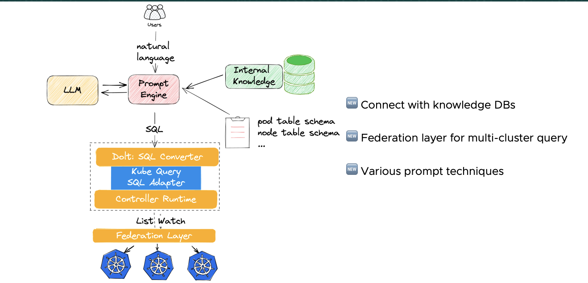
2. 我的 Speaker 之旅
从 2019 年关注起，到 2023 年第一次参加，期间 KubeCon 一共举办了 11 届，分别在中国（上海 2 届，线上 1 届），北美（圣迭戈、洛杉矶、底特律各 1 届，线上 1 届），欧洲（ 巴伦西亚、阿姆斯特丹各 1 届，线上 2 届）。在每次活动结束后，CNCF 都会发布 Transparency Report 来回顾活动以及公布一些数据。其中，演讲者相关的数据分享让我非常感兴趣:
- Europe 2023：1761 投稿 / 186 接收 / 接收率 11%；
- NA 2022：1551 投稿 / 176 接收 / 接收率 11%；
- Europe 2022：1187 投稿 / 146 接收 / 接收率 12%；
- China 2021：355 投稿 / 67 接收 / 接收率 19%；
- NA 2021：976 投稿 / 136 接收 / 接收率 14%；
- Europe 2021：624 投稿 / 93 接收 / 接收率 15%；
- NA 2020：856 投稿 / 128 接收 / 接收率 15%；
- Europe 2020：1525 投稿 / 244 接收 / 接收率 16%；
- NA 2019：1801 投稿 / 225 接收 / 接收率 12%；
- China 2019：937 投稿 / 未公布接收数或接收率。
投稿与接收数据出现在每次 Transparency Report 的形式和丰富程度不同，部分 Report 只公布了投稿数和接收率或只公布了 Session 数，因此相关数据经过转换计算。准确数据应以 Report 内容或官方统计为准。
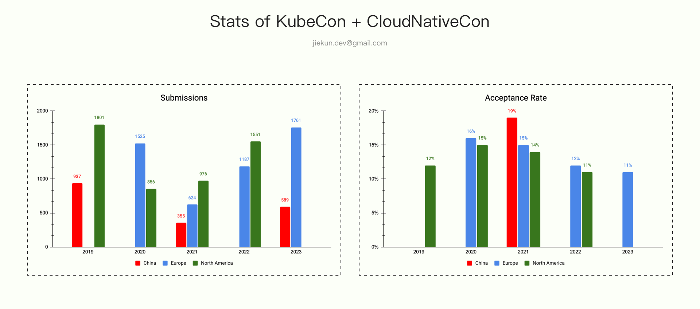
通过数据可以看到，每届活动的投稿接收率维持在 10-20% 之间，其中，欧美的接收率又相较中国区略低一些。而投稿数量上看，虽然受过去几年疫情的影响，但欧美的投稿数量仍然远高于中国区。
个人认为，投稿数量一定程度受这些因素影响：疫情政策限制、活动宣传覆盖率、个人意愿。而具体到个人意愿，如果能事先了解一次活动的主题、内容、完整流程，有可参考对象，那参与意愿也会随之提升。
因此，写这篇“小”记的另一个动力是：分享一些投稿和准备的过程，希望帮助更多年轻的开发者参与类似的活动，特别是贡献更多的分享议题。这里强调年轻的开发者是因为：
- 通常高级工程师们都已经有足够多的经验和经历支撑他们完成一次好的分享；
- 年轻的开发者需要的更多是自信和尝试，“小”记的目标正是鼓励分享，而不是指手画脚地教别人完成一次难点攻关去分享。
2.1 CFP 阶段
想参与一次活动首先得知道活动的时间，以 KubeCon 为例，你可以在很多地方找到它接下来的举办时间和地点：The Linux Foundation。在有明确的投稿目标后，关注对应的 CFP（Call For Proposals）时间。例如，我参与的 2023 年中国区 KubeCon 在 9 月 26 - 28 日举行，它的 CFP 时间为 4 月 26 日 - 6 月 18 日。
投稿提醒：目前正是 2024 年欧洲 KubeCon 的投稿时间，截止时间为 11 月 26 日。
我的分享主题与分布式追踪的采样策略有关，在撰写投稿内容之前，我发邮件咨询了 OpenTelemetry 社区一位有丰富经验的开发者，因为我并不确定我想分享的内容是否有价值，是否已经印在了各种八股文手册中。
Mail: Looking for suggestion of KubeCon speech
Hi.
我在很多地方看过你和其他人的采样策略分享，例如 link1 / link2 / …，所以有一些问题期望得到你的看法和建议：
- 值得再花 30 分钟介绍采样策略吗？
- 是否应该花时间介绍现有的采样策略，还是说应该只关注新的采样方案，例如回溯采样？
…
这位开发者的回复认为介绍这个主题是可以接受的，因为距离上一次分享已经过了比较长时间，也有很多新的内容出现，并且邮件抄送了另一位社区的分享者，她有过类似主题的分享，因此我可以得到更多的 CFP 建议。过了几天，我在一家 KFC 里一边吃早餐一边完成了 CFP 的标题和内容，并再次回复邮件请教，并在大约 1 周后得到了新的答复。
Mail: CFP Review
分布式跟踪在当今的微服务架构中扮演着重要的角色。然而，收集完整的 Trace 数据的成本很高。OpenTelemetry 提供了各种采样策略来减少资源使用，不同的策略需要不同的网络 I/O、内存和存储空间来实现不同的采样效果，这些都分析采样策略在特定场景表现的的关键维度。我们将分享定量分析不同采样策略的成本和质量的经验，并介绍一些我们在探索的新型采样策略，并将他们与现有策略进行比较。
- Reviewer 1：可以在介绍方案前先描述清楚为什么收集完整 Trace 数据的成本很高；
- Reviewer 1：可以简单说一下不同采样策略是怎样组合的，因为它们各有不同的要求，同时这也可以为你场景和解决方案作铺垫；
- Reviewer 2：这是 Collector 侧的采样策略还是也覆盖到 SDK 侧的，可以在描述里介绍清楚；
- Reviewer 2：在结尾处介绍听众可以有怎样的收获；
- …
CFP 修改是个漫长的过程，邮件沟通的效率也不高，最终我在 5 月 19 日确定了投递内容。在正式投递的过程中，还有许多材料需要准备，你需要介绍：
- 你的分享会对项目生态和社区带来什么好处；
- 你在分享相关项目上的经验；
- 你的分享经历。
作为首次参与的分享者，我提交了 2 段分享视频，分别是 2022 年参加 TiDB Hackathon 的 Lightning Talk 以及临时录制的与投递内容相关的分享。因为是单盲审稿，这些材料有助于让审稿人了解投递者对内容的掌握程度以及讲述能力。
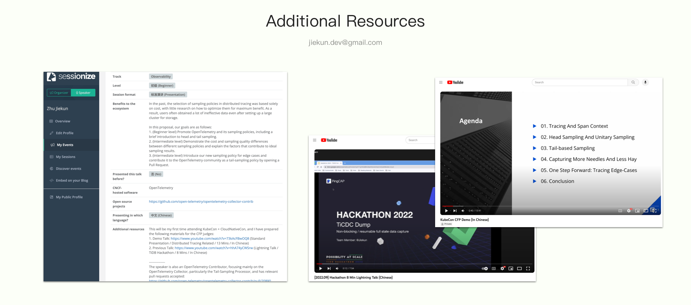
到这里，CFP 投递就告一段落了，接下来只需要等待 CFP 结果。2023 年中国区 KubeCon 的 CFP 结果在 8 月 3 日揭晓，中选的议题将有接近 2 个月时间进行准备（当然，提前进行准备总是更好的）。
这里还有一些其他的信息在我 CFP 投递过程中帮到我，希望也能对在阅读的你有帮助：
- Crafting Compelling Conference Proposals；
- Submission Reviewer Guidelines；
- 评分准则和最佳实践；
- Call For Proposals。
2.2 分享准备
分享内容的准备工作因主题分享而异，但是通用的建议是及早收集材料，以免在收到 “议题被接收” 的邮件时因一页 PPT 都写不出来而良心不安。
在参加 KubeCon 之前，我过往的分享范围都是工作所在的小组、部门，所以我需要更多的工具、步骤来帮我完成这次对外的演讲。这些工具、步骤包括：
- 为每页 PPT 准备完整的文字版本，详细程度基准是：任意路人都可以照念完成分享；
- 完成 1-2 次的分享演练，录音并聆听自己的分享；
- 完成 1 次组内分享，听取大家的建议作修改；
- 录制视频，邀请 3 位相关领域的专家观看和提出修改建议；
- 在演讲前完成最后的演练，录音并聆听，看看效果是否满意。
在处理第 4 点的时候，有一些比较有趣的事情。因为向一位国外的开发者寻求建议，我需要准备英文的演讲视频。受限于英语水平，我让 ChatGPT 帮我完成了大部分的翻译工作，再一一进行核对。事实证明 ChatGPT 真的很喜欢添油加醋，包括但不限于在翻译的过程中理解我的文字并发表自己的思考。
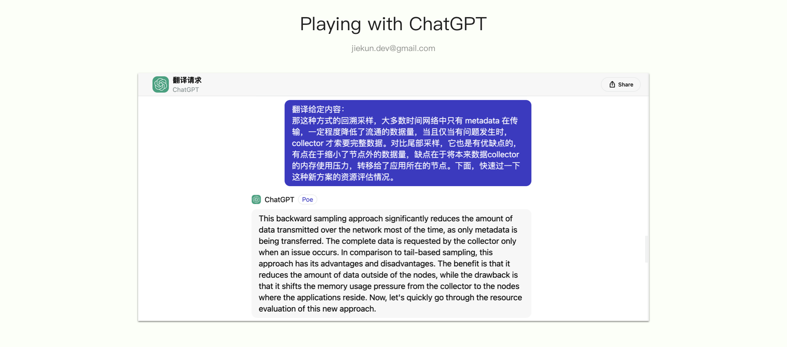
在艰难完成翻译后，录制英文演讲视频时我又遇到了新的麻烦。因为对发音、语调总是不满意，在多次尝试后，我不得不寻找 AI 代讲，最终的 Dry Run 视频可以在这里找到：dryun。
回到准备过程本身，最重要的事情是让演练的听众、专家提出建议并调整演讲内容。通常，领域的专家不一定是非常专业的演讲者，或者说未必有很丰富的演讲经验，如果他们在表达专业意见上有阻碍，可以参考 CNCF 提供的演讲者指南，主动询问以下方面他们的想法：
- 我的演讲表达足够清晰吗，你是否清晰了解我想分享的主题和内容？
- 我的 PPT 设计合理吗？
- 哪些页面文字太多或太少？
- 哪些页面可以做更多的图表表达，哪些图表不应该使用？
- 是否有合适的幽默内容片段？
- 演讲的速度是否容易 Follow？
- …
同样，我在这里引用一些 Reviewer 的修改意见作为示例。
Conversation: Presentation Review
- Section 2：头部采样和尾部采样的优缺点过于简略；
- Section 3：性能评估的时候没有介绍 Collector 的部署架构和细节，包括多个影响性能测试的参数没有告诉听众；
- Section 3：性能评估结果的图线太小，并且相关数据也没有对比参考，只展示数据不能说明这个数据是好是坏；
- Section 4：有一种采样策略的使用场景讲解得不够清晰，应用场景不太明确；
- …
多次修改后形成最终的分享，在参加活动前，可以将 PPT 导出上传到议题的页面，可以吸引一些还没决定参与哪场分享的听众。参会者阅读 PPT 可以更有针对性地选择分享会场，并且提前熟悉分享内容，便于跟上演讲者的节奏。
2.3 演讲
我的议题整理在之前的博客中，如果感兴趣的话可以前往 KubeCon 2023 上海：OpenTelemetry 采样分享 阅读。演讲整理确实是个非常辛苦的事情，因为书面用语和口头用语有非常大的差别，建议有钞能力的同学外包给 ChatGPT。
演讲之前，工作人员会特地叮嘱要重复听众的提问，以确保问题能清晰地记录在视频中，活动的视频会在 10 月 13 日之前上传至 Youtube。
在演讲的时候，主办方通常会有摄影师在场，这些视频会在活动后 1 周内上传，但是因为场地很多，所以并不保证每位演讲者都有能回去交差的照片。让随行同事帮忙拍一些保底会更稳妥，或者像我一样与家人一同前往上海，并且找主办方索要短暂入场的允许。
3 小结
以上是对我作为演讲者参与 KubeCon 的一些记录，希望有你感兴趣的内容，也希望能鼓动感兴趣的年轻开发者参与到未来的活动中。
在投稿时，有一些建议我认为对一线开发者是非常有价值的：
- 分享投稿不必介意以前是否有人分享过，不必追求 100% 新颖的想法、内容，更重要的是你希望听众从你这里收获什么。而这些事情会有审稿人替你操心，如果他们觉得不合适，自然会反馈回来；
- 分享投稿不会要求你的背景，比如职位 Title，是否是 Tech Leader 或者 CTO。同样，审稿人也会根据你的材料 Review 你是否适合完成这次分享。
希望在下一次 KubeCon 上认识正在阅读本文的你！
4. 更多图片
查看活动照片：KubeCon + CloudNativeCon + Open Source Summit China 2023